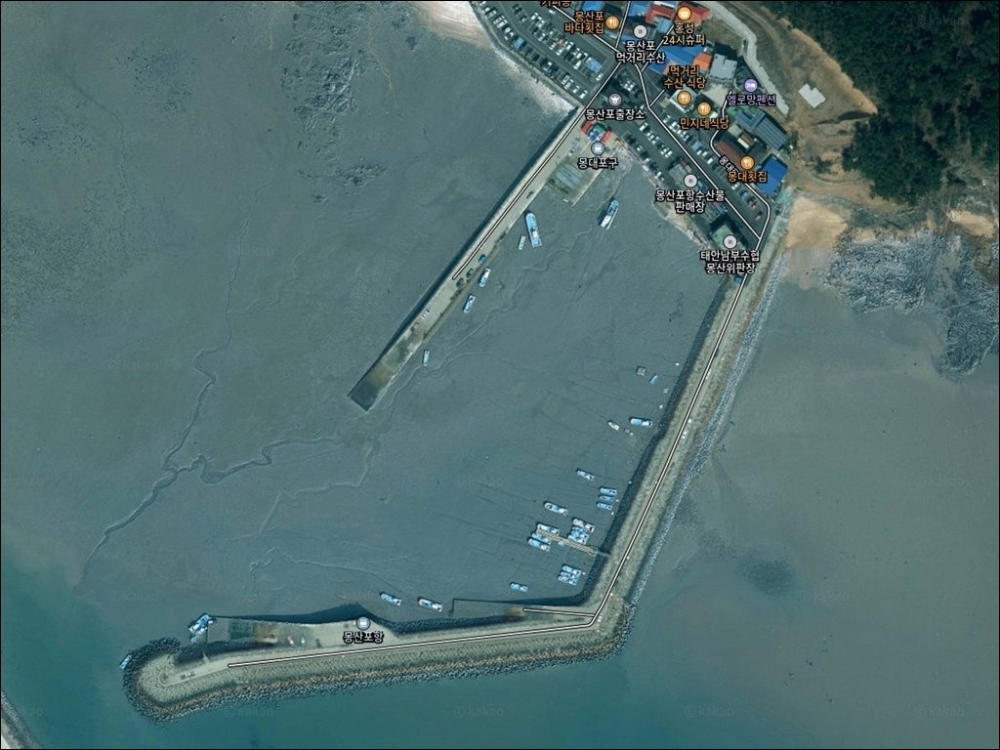
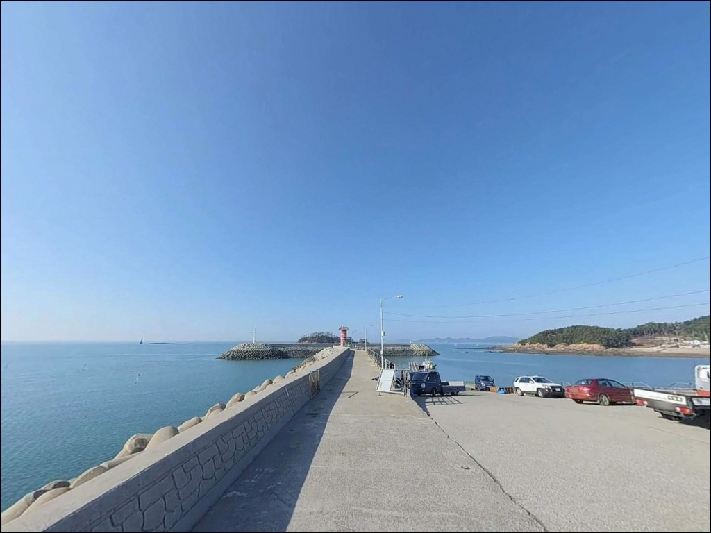
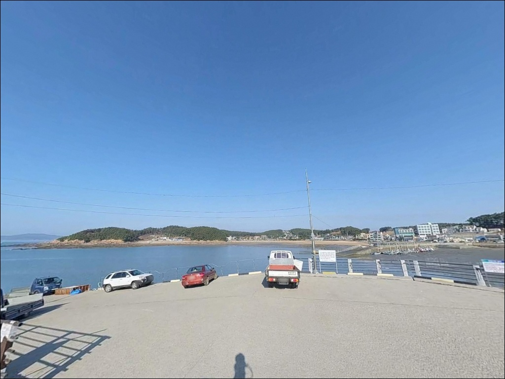
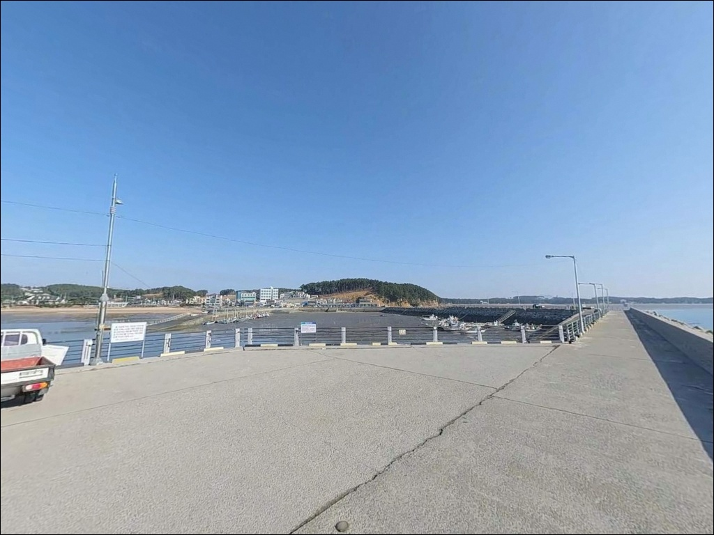
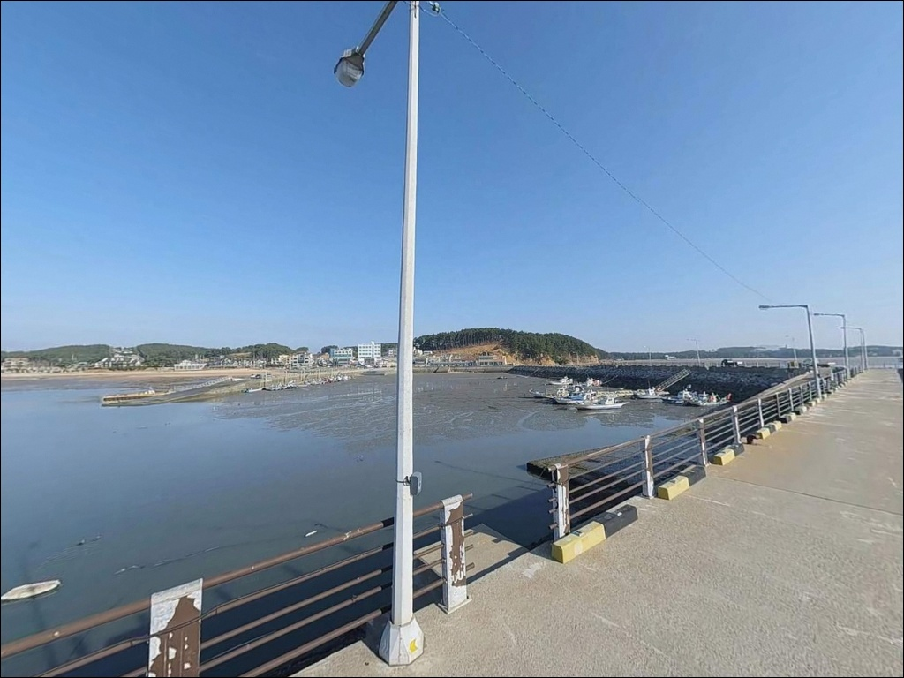
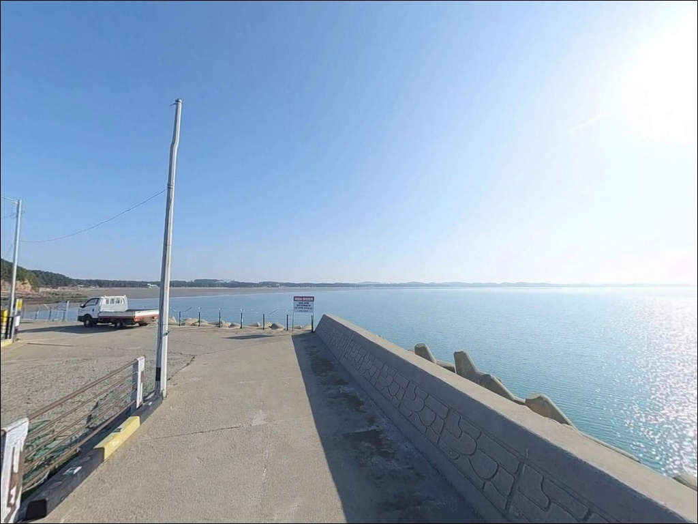
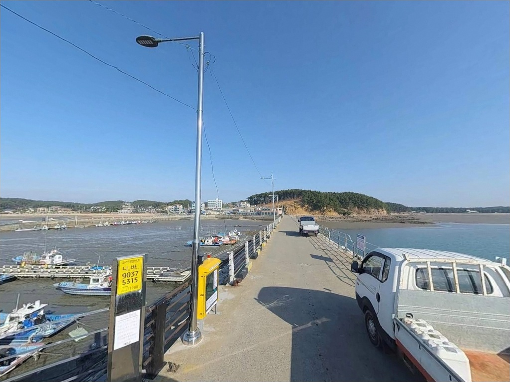
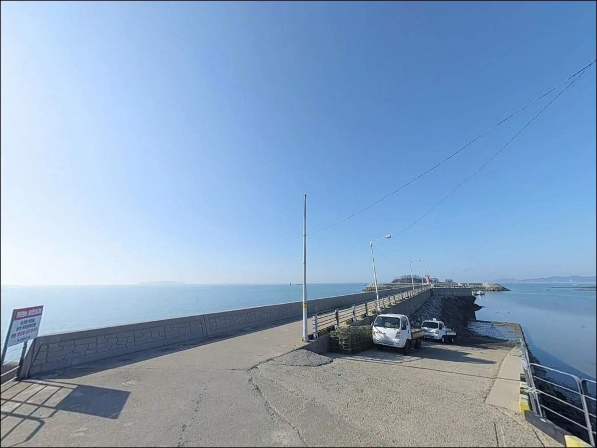
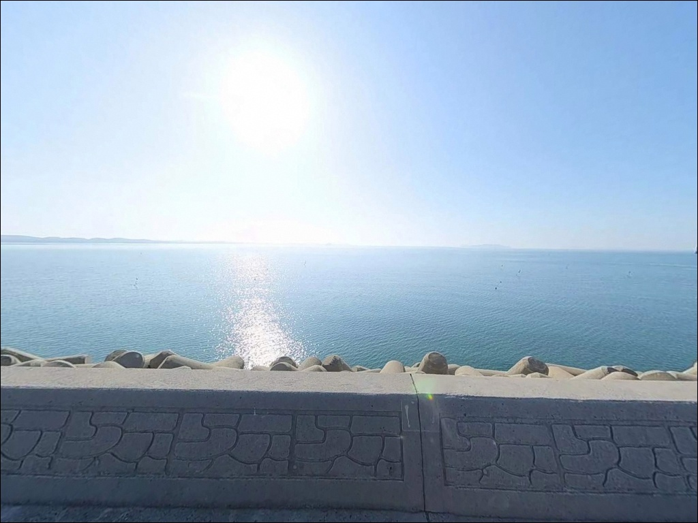

몽산포항 (몽대포구), 충남 태안군 바다 풍경 좋은 차박, 낚시 스팟
이 페이지에는 광고(제휴 링크 포함)가 있으며, 광고 링크를 통해 구매하면 운영자가 판매 수익 또는 수수료를 받을 수 있습니다. 포인트 사진: 카카오맵 스카이뷰·로드뷰. 이 페이지의 지도·사진 이미지는 카카오맵의 실제 서비스 이미지와 다를 수 있습니다.


포인트 안내
몽산포항
충남 태안군 남면 몽산리 686-26
간조 시간대에 몽산포항을 찾으면
방파제 주변 갯벌이 넓게 드러나
어떤 채비를 써도 낚시 자리를
제대로 잡기 어렵습니다.
서해안 특성상 조수 간만의 차가 크고
만조 전후 타이밍이 이 포인트의
낚시 가능 여부를 결정합니다.
충남 태안군 남면 몽산리에 자리한 몽산포항은
몽산포해수욕장 북쪽에 붙어 있는
지방어항입니다.
방파제 연장은 650m 수준으로,
항 정면에 안목도가 위치해
외해에서 직접 밀려오는 파도를
어느 정도 차단하는 구조를 갖추고 있습니다.
이 글은 몽산포항의 진입 동선,
방파제 낚시 여건, 차박 체류 조건,
대안 포인트 정보에 집중합니다.
조황 단정이나 특정 어종 보장은
이 글의 범위에 포함되지 않습니다.

1. 진입 동선과 포인트 접근성
몽산포항은 서해안고속도로 홍성IC에서
96번 국도를 따라 안면도 방향으로 진입한 뒤
원청사거리에서 77번 국도로 이어지는 경로가
일반적인 접근 동선입니다.
항구까지의 도로는 포장 상태가 양호한 편이며,
대형 차량도 무리 없이 진입할 수 있는
수준으로 알려져 있습니다.
항만 내 부지가 비교적 넓어
캠핑카나 루프탑 텐트 차량도
회차에 어려움이 크지 않을 것으로 보입니다.
주차는 항구 진입부 콘크리트 부지와
인근 해수욕장 주차장을 활용하는 방식이
현실적입니다.
다만 주말이나 성수기에는 차량이 몰려
지정 구역 외 주차로 인한 마찰이
생길 수 있으니 주차 위치를 먼저 살펴야 합니다.
몽산포항은 해수욕장과 바로 붙어 있는 구조라
방파제까지의 접근 동선 자체는 짧습니다.
방파제 중간 이후로는 진입로가 좁아질 수 있어
자전거나 카트로 장비를 옮기는 낚시인도
간혹 보이는 편입니다.

2. 차박 환경과 야간 체류 여건
몽산포항 주변은 해수욕장 관광지와 붙어 있어
야간에도 일정 수준의 인적·불빛이 남습니다.
펜션과 캠핑장이 1km 이내에 밀집해 있어
완전히 조용한 차박 환경을
기대하기는 어려운 구조입니다.
낚시를 마치고 짧게 머무르는 단기 체류 위주로
접근하는 편이 현실적입니다.
방파제 끝단은 야간 조명이 부족할 가능성이 있어
개인 헤드랜턴은 필수입니다.
안목도가 서북서 방향 파도를 어느 정도 막아주는
구조이지만, 기상에 따라 바람 영향을 받는
상황은 얼마든지 생길 수 있으므로
출발 전 기상 예보 확인이 먼저입니다.
몽산포해수욕장 일대는
태안해안국립공원 구역에 공식 포함되어 있습니다.
국립공원 구역 내에서는
지정 야영장 외 장소에서의 야영·취사가
원칙적으로 허용되지 않습니다.
인근에 국립공원 직영 몽산포자동차야영장이
운영 중이므로,
야간 체류를 계획한다면
사전 예약 후 지정 시설을 이용하는 것이
가장 안전한 방법입니다.


3. 주변 편의시설 및 인프라 현황
몽산포항 주변에는 자연산 회를 취급하는
횟집과 식당이 분포해 있습니다.
운영 현황은 시기에 따라 달라질 수 있으므로
방문 전 확인하는 편이 좋습니다.
생필품과 낚시 소품은 반경 3km권에
농협하나로마트를 이용할 수 있습니다.
응급 상황 발생 시 남면 보건지소가
반경 10km권 내에 위치합니다.
편의점·주유소는 반경 3km권 안에서
해결 가능한 수준으로 알려져 있으나,
야간이나 비수기에는 운영 시간이 줄어들 수 있어
출발 전 식수·얼음·여분 채비를
미리 챙기는 편이 안전합니다.

4. 방문 전 반드시 챙겨야 할 준비사항
몽산포항 방문에서 가장 먼저 확인할 것은
물때입니다.
원투낚시란 무거운 봉돌 채비를 멀리 던져
바닥층 어종을 노리는 낚시 방식으로,
이 방식이 이 포인트와 가장 잘 맞지만
간조 시간대에는 방파제 앞 갯벌이 드러나
채비를 던질 수심 자체가 확보되지 않습니다.
바다타임에서 태안 남면 기준 물때를 확인하고
만조 전 2~3시간을 기준으로
입장 시각을 맞추는 것이 기본 전략입니다.
서해안은 기상 변화가 빠른 편입니다.
당일 아침 기상청 예보를 다시 한번 확인하고,
바람이 강한 날에는 방파제 외항 쪽 자리를
피하는 것이 안전합니다.
방파제 테트라포드는 물기가 남아
미끄럼 위험이 높으므로
미끄럼 방지 신발과 구명조끼는
반드시 챙겨야 합니다.
몽산포항은 어선 조업이 이루어지는
실제 지방어항입니다.
어선 통행 동선과 어구에 접촉하지 않는 자리를
잡는 것이 기본 매너이며,
쓰레기는 전량 회수하는
낚시꾼으로서의 기본을 지켜야 합니다.

5. 물때를 알아야 달라지는 방파제 낚시 여건
몽산포항의 지형은 서해 전형적인
갯벌형 완만 수심 구조입니다.
조수 간만의 차란 만조와 간조 사이의
수위 높이 차이를 말하는데,
서해안은 이 차이가 평균 5~6m에 달해
낚시 가능 시간이 물때에 따라
크게 달라지는 구조입니다.
방파제 길이는 650m 수준으로,
방파제 끝단으로 갈수록 수심이 확보되는
구간이 형성될 가능성이 있습니다.
항 정면에 안목도가 위치해 있어
외해 파도가 직접 밀려오는 구조는 아니지만,
항 입구 쪽 조류 흐름 구간은
물때에 따라 먹이 활동 어종이
모이기 좋은 조건을 갖출 수 있습니다.
방파제 끝단과 외항 석축 주변은
테트라포드가 부분적으로 배치된 형태로,
이 구조물 사이를 노리는 채비 운용도
이 포인트에서 시도해볼 만합니다.
해수욕장 방향 모래 사질대는
수심이 얕은 편이지만
만조 전후에는 장타 원투로
바닥층 어종을 탐색하기에
나쁘지 않은 조건이 만들어집니다.
최신 조황은 방문 전에 꼭 검색해 보시기 바랍니다.


6. 이 포인트에 어울리는 낚시 스타일
이 포인트에서 가장 무난하게 쓸 수 있는 방식은
원투낚시입니다.
방파제 외항 방향이나 해수욕장 모래사질 구간에서
청갯지렁이 미끼로 바닥층을 노리는 방식으로,
이 지역 지형 조건과 잘 맞습니다.
이런 구조에서 기대해 볼 수 있는 어종으로는
붕장어, 우럭, 노래미 계열이 있으며,
여름 야간에는 붕장어 탐색형 원투가
어울리는 시즌이기도 합니다.
루어낚시도 방파제 석축이나
테트라포드 주변을 소프트베이트 채비로
탐색하는 방식으로 시도해볼 수 있습니다.
수심이 전반적으로 얕은 구조라
루어 효율이 제한될 수 있지만,
항 입구 조류 영향권에서
지그헤드 채비를 굴리는 방식은
만조 전후 타이밍에 반응을
기대해볼 수 있는 운용입니다.
찌낚시는 내항 쪽 잔잔한 구간에서
소형 고추찌를 활용하는 방식이 무난합니다.
봄~가을 시즌에는 숭어나 학공치가
방파제 주변을 회유하는 경우가 있어
가볍게 즐기는 생활낚시 스타일로
어울리는 선택입니다.
항구에서 근해 선상낚시를 나가는 배도
운영되는 것으로 알려져 있어,
우럭 위주의 선상 출조를
계획하는 낚시인에게도 이 포인트는
출발지로서의 역할을 합니다.

7. 대안 포인트와 플랜 B 동선
몽산포항 조류가 맞지 않거나
주차 여건이 여의치 않을 때
가장 먼저 이동할 만한 곳은
마검포항입니다.
같은 태안 남면 해안선상에 위치하며
몽산포항에서 남쪽으로 5~7km 거리입니다.
방파제 규모와 시설이 더 체계적인 편으로
알려져 있고, 초들물~만조 사이에
입질이 활발하다는 정보도 있습니다.
몽산포항에서 북쪽으로 약 1.4km 거리에는
몽대포구가 있습니다.
규모는 비슷한 소형 포구이지만
같은 해안선에서 다른 포인트를
탐색하는 용도로 활용하기 좋습니다.
바람 방향이나 조류 조건이
몽산포항과 다를 수 있어,
한쪽이 여의치 않을 때
번갈아 시도하기 좋은 짝 포인트입니다.
차박 대체지를 찾는다면
몽산포자동차야영장(국립공원 직영)이
가장 현실적인 선택입니다.
예약제로 운영되는 공식 시설이므로
전기·편의시설을 갖추고 합법적으로
야간 체류가 가능합니다.
추가 대안으로는 반경 3km권의
청포대오토캠핑장도
고려해볼 수 있습니다.

물때만 맞으면,
몽산포항이 달리 보입니다
가볍게 원투낚시를 즐기거나
서해 방파제 분위기에서 짧게 손맛을 보고 싶은
낚시인이라면 몽산포항은 나쁘지 않은 선택입니다.
접근성이 좋고 방파제 길이도 충분해
자리 선택의 폭이 있으며,
마검포항이나 몽대포구를 묶어서
돌아보는 동선으로 활용하기도 좋습니다.
반면 물때 확인 없이 간조 시간대에 찾거나,
급심 포인트를 기대하고 찾아오면
갯벌이 드러난 방파제 앞에서
허탕을 치는 경우가 생길 수 있습니다.
물때 확인, 태안해안국립공원 구역 준수,
지정 주차 구역 이용,
이 세 가지가 몽산포항 방문의
기본 준비 조건입니다.
몽산포자동차야영장을 예약해 두고
만조 전후 방파제에서 원투낚시를 즐긴 뒤
조용히 하룻밤 머무는 낚시 여행자라면,
서해안 소형 어항의 분위기를
편하게 즐길 수 있는 출조가 될 것입니다.